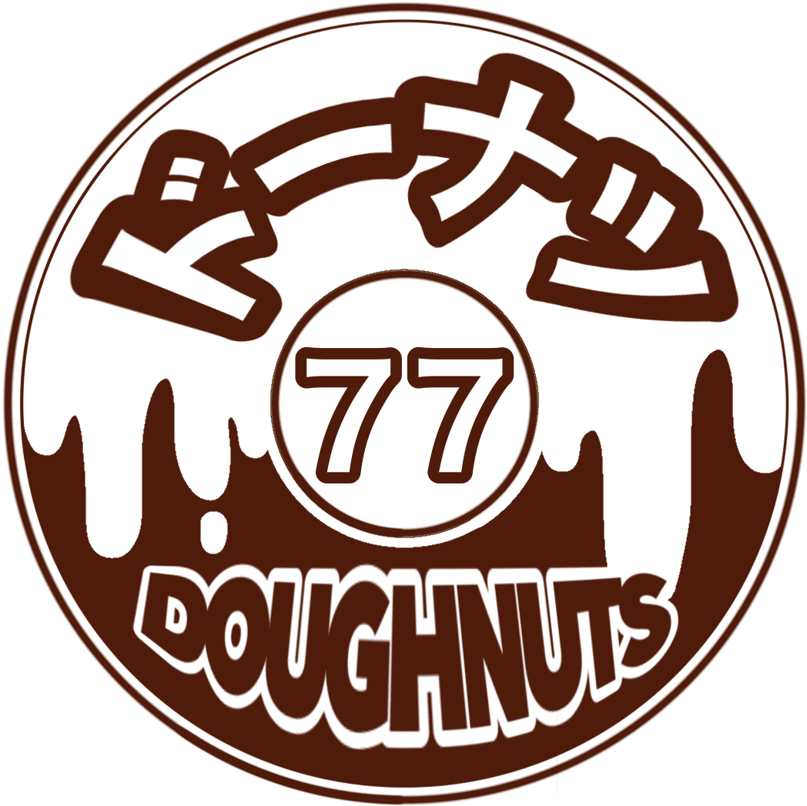

おなおドーナツ 代表 / パン作りが好きです
お家で焼ける、おいしくて可愛いパンの世界へようこそ！
「おなおドーナツ」を運営している、おなおです。
YouTubeチャンネルを中心に、ホームベーカリー（HB）を使ったレシピや、成形が楽しいパン、手軽に作れるこねないパンの作り方を発信しています。
「 難しいことはわからないけど、とにかく楽しそう！」と思ったのがパン作りを始めたきっかけでした。動画の初期の頃はとにかく挑戦して、たくさん失敗を繰り返しています。「失敗してもパン作りって楽しいよね！」と共感してもらえたら幸いです。
現在、公開しているレシピは**86種類**を超えました。どのレシピも「ワクワク感」を大切にしています。忙しい毎日の中でも、パンが焼き上がる香りで少しでも幸せな気持ちになってもらえたら嬉しいです。
最新のレシピ動画はYouTubeをチェック！
おなおドーナツ YouTube